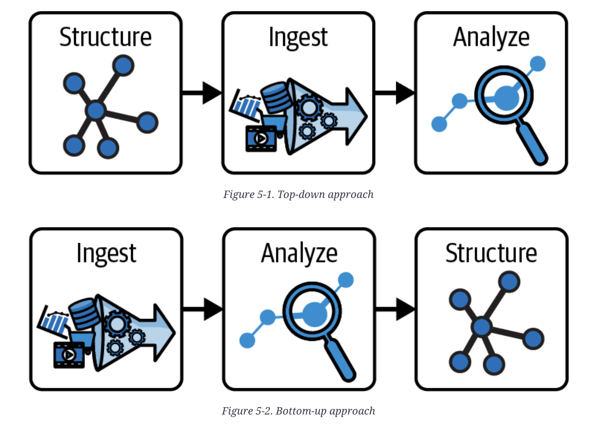

Today I Learnt
2025-11-29
A running log of things I learn day today, whatever day.
2025-11-29
Generally, in a CI/CD pipeline, it is better to make the CI do the heavy lifting (artifact creations) than the CD.
Longer CD tasks will make rollbacks less easy, which isn't really desired.
2026-01-20
Notes taken from reading chapters 1/2 of Deciphering Data Architectures by James Serra.
What is Big Data?
Big Data is all the data you can think of in your org. (Enterprise Resource Planning (ERP), Customer Relationship Management (CRM), etc.).
There are 6 characteristics of Big Data
- Volume - how much there is.
- Variety - type of data (XML, JSON, etc.).
- Velocity - how quickly is it generated.
- Veracity - how valid is it.
- Variability - how variable is it.
- Value - how much value does it have.
Each company is on a journey towards data maturity.
Types of Data Architectures
- Relational databases (SQL). Good for OLTP, bad for anlytics.
- Relational Data Warehouse (RDW) - Data processing + data storage - Relational, schema-on-write, the data is schematised when writing it. - Data in relational db is copied in RDW. - Not optimized for large amounts of data
- Data Lake - Only a storage (objects, e.g. Hadoop's HDFS) - Think of it as a file system - Schema-on-read, data is unstructured in write - Limited scalability. - Ease of write (compared to RDW), but hard of use since no schema.
- Modern Data Warehouse - Combination of 2 and 3.
- Data Fabric - Think 4 but with more bells and whistles (APIs, metadata, etc.)
- Data Lakehouse - Get rid of the relational part of a Modern Data Warehouse, but have Delta Lake (a wrapper on top of the unstructured data, so looks relational).
- Data Mesh - Decentralised data application, more on these in later chapters.
2026-01-23
Notes taken from reading chapters 4/5 of Deciphering Data Architectures by James Serra.
The Relational Data Warehouse
A relational data warehouse is a SQL database that has aggregate information from different sources. It is not a dumping ground for data, since it is structured. Usually constructed as a denormalised table (as oppose to database views (since these would impact the underlying tables)).
An ETL may be used to hydrate the RDW.
Why use a RDW?
- Reduce stress on production system
- Optimize for read access.
- Integrate multiple data sources.
- Upgrade against application upgraes.
- Single source of truth for anlaytical data (don't have inconsistency in the analytical system, only a single anlaytics db).
Generally, you take a top-down approach when buidling the RDW:
- Determine what is the data you want to store
- Build the tables
- Get the data in via ETL.
Drawbacks:
- Complexity
- High costs
- Data latency
- Limited flexibility
How to determine what data to extract and add in the ETL?
- Timestap
- Change Data Capture (INSERT, UPDATE in the application database).
Data Lake
A data lake is a dumping ground for raw data. It is schema-on-read (a.k.a. you determine the schema of the data when you look it up). This is a big contrast with RDW above.
Why use?
- No upfront cost, just dump
- RDW usually requires a batch, here we don't need any of this, can just dump whenever.
Generally you use a bottom-up approach when building data lakes:
- Ingest the data (just in case == data stockpiling).
See the difference between top-down and bottom-up in this picture

Generally, you should organise your data lake in layers:
- Raw layer (raw events)
- Conformed layer - e.g transformed to JSON
- Cleansed layer - enriched (e.g. integrate with some other data input).
- Presentation layer - ready for use by business applications.
- Sandbox layer - copy of raw layer for experiments.
Create folder structure for each layer, helps with
- Data segregation
- Access control
- Performance optimization
- Backup and disaster recovery
- Data partitioning